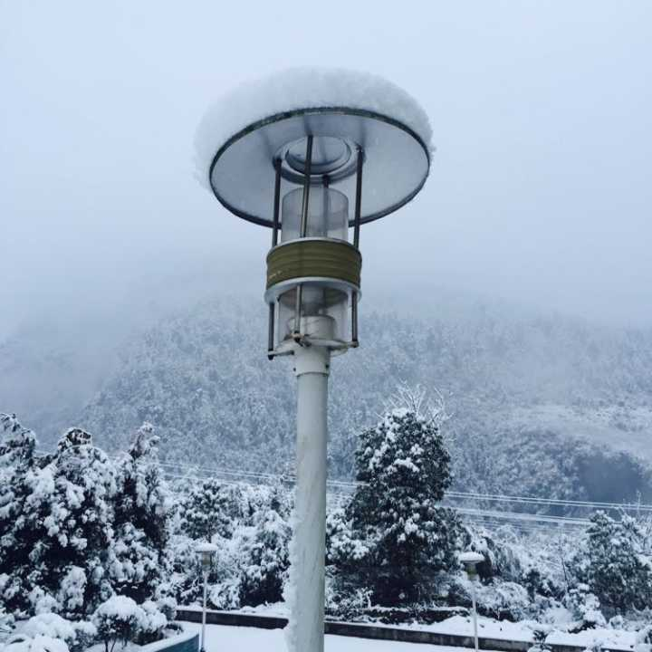

名字:
tsunami
性别:女

介绍:岁月不饶人我不饶岁月
问题
答案
新建于:2015-11-03 01:31:25 PM，更新于2015-11-17 04:43:26 PM
正文: 我一朋友在快餐店，东西已经放在桌子上了。过去拿吸管。回来的时候桌子被几个小孩占了。让他们离开，嬉皮笑脸说不。
于是我朋友低下头非常温柔地问他们，小朋友，你们的家长在不在呀？回答不在。
于是怒拍桌子，那你们他妈的快点给老子滚！
吓哭好几个。
啊噢，没想到这个回答这么赞啊。谢谢大家的认可哈哈，有机会可以试试，就不一一回复了。感谢